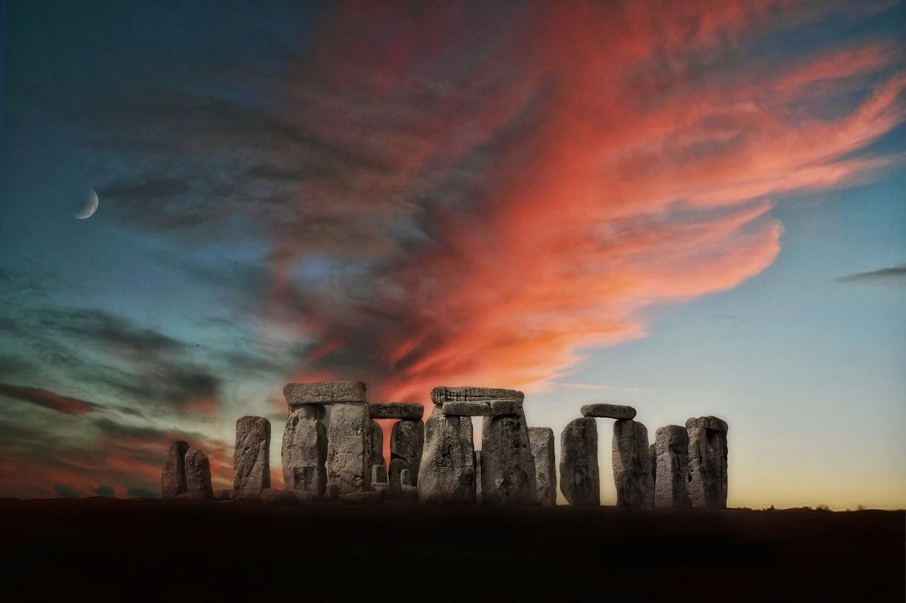
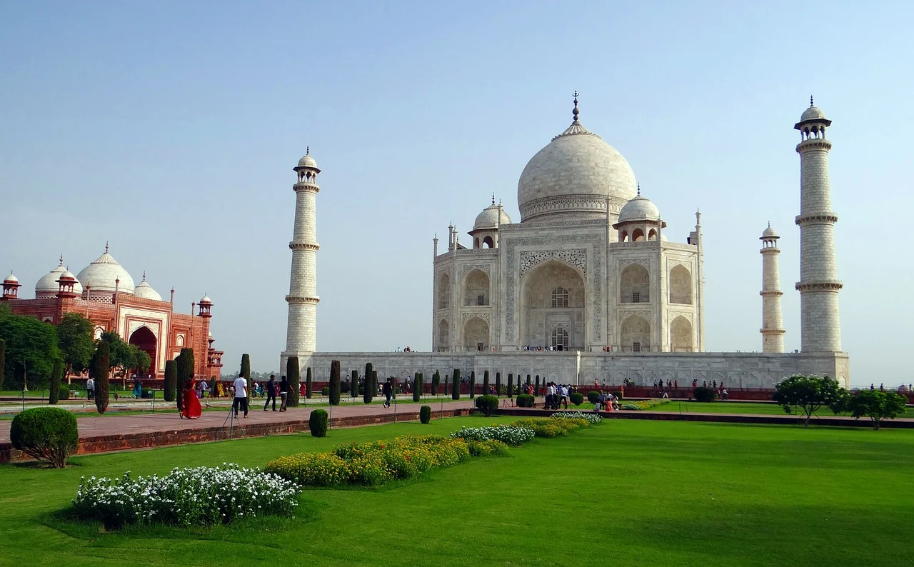
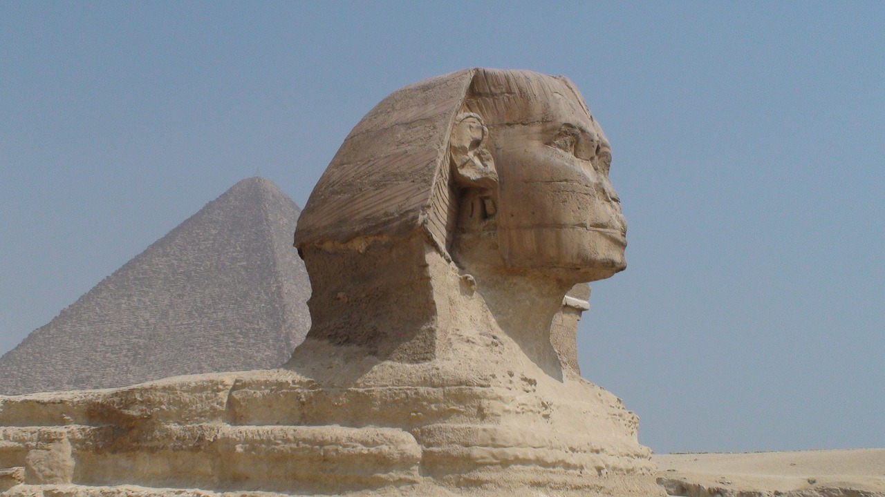
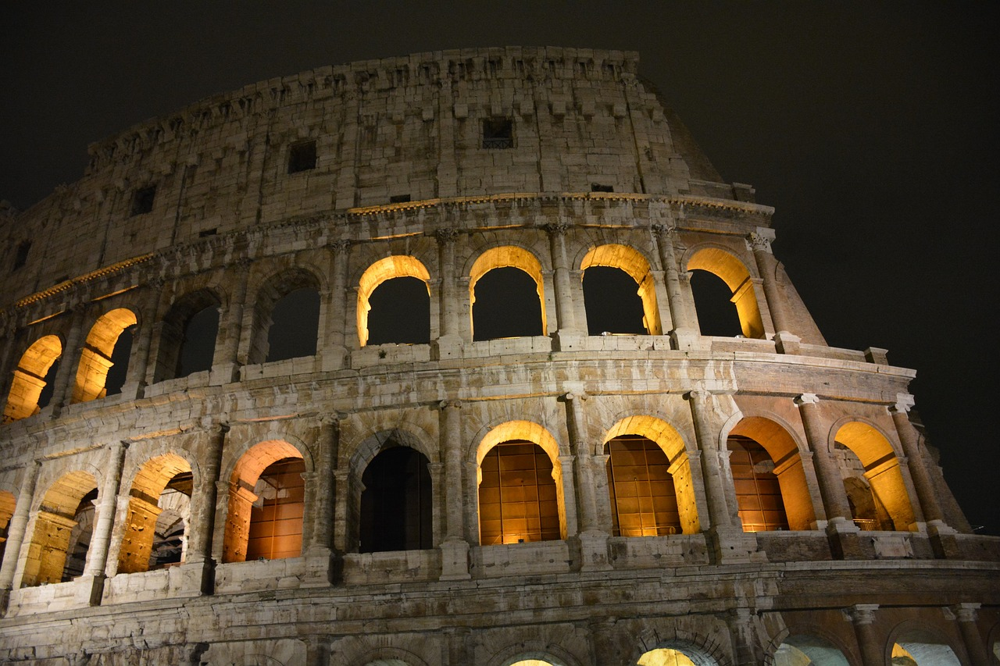

There are so many amazing places around the globe to see, we couldn't possibly include them all in just one list. But, these breathtaking destinations are definitely worth bumping to the top of your travel bucket list–whether you're looking to relax on a beach, get off the grid or explore a city.
   The power of wanderlust is real. Catch a glimpse of the most gorgeous destinations across the globe, and you'll feel a fresh wave of inspiration washing over you. And when you can't pack your bags to experience the awes of travel in person, sometimes experiencing dreamy destinations from afar can satisfy your wanderlust and fill you with hope. Keep reading for a virtual tour of some of the most beautiful destinations in the world. So beautiful, in fact, they're almost otherworldly.
Various lists of the Wonders of the World have been compiled from antiquity to the present day, to catalogue the world's most spectacular natural wonders and manmade structures.
The Seven Wonders of the Ancient World is the first known list of the most remarkable creations of classical antiquity; it was based on guidebooks popular among Hellenic sightseers and only includes works located around the Mediterranean rim and in Mesopotamia. The number seven was chosen because the Greeks believed it represented perfection and plenty, and because it was the number of the five planets known anciently, plus the sun and moon.[1] Many similar lists have been made.